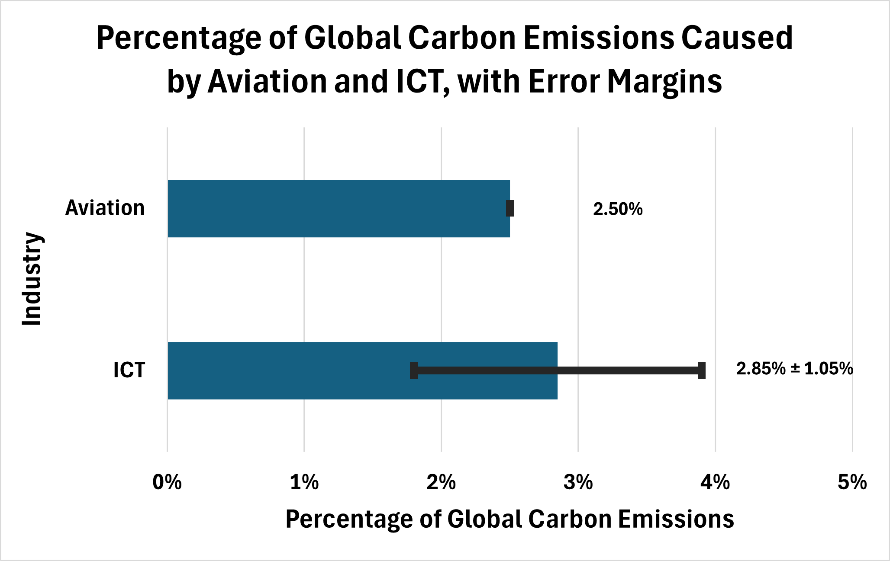
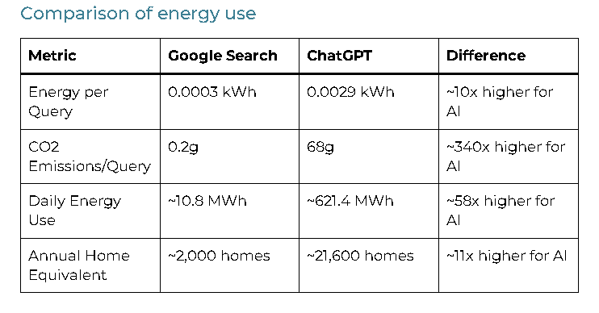

Negative Impacts of Computer Technology on the Environment
Understanding how computing technology contributes to environmental challenges.
1. Growing Energy Consumption
The Information and Communications Technology (ICT) sector is a significant driver of global power demand. According to the International Energy Agency (IEA), global electricity demand is projected to grow by 3.5% annually through 2030, and data centers and AI are contributing significantly to this increase [1]. The fraction of global energy consumption by data centers doubled between 2011 and 2021, reaching 3% of global electricity use [2]. This trend is substantially driven by AI, and by a dramatic growth in the number of digital devices connected to the internet [2]. Blockchain technology and cryptocurrencies are another significant contributor to energy consumption [2].
Projected Growth
By 2030, the overall increase in global power consumption will be equivalent to adding two European Unions to the global grid [1].
Carbon Intensity
Because much of this power is drawn from carbon-emitting fossil fuels, the digital economy directly contributes to the global warming cycle [1].
AI as Energy Driver
Artificial intelligence and data centers are outpacing other industries in energy needs, creating unprecedented demand on power grids worldwide [2].
Global Electricity Demand Growth
It is difficult to determine the exact amount of carbon emissions caused by the ICT sector [3], [4]. However, it is estimated to exceed the emissions of the entire aviation industry [2], as depicted in the chart below.

This bar chart depicts the percentage of global emissions caused by the ICT sector, using the median value of 2.85% based on the minimum and maximum estimates of 1.8% and 3.9% respectively [acm]. There is some uncertainty in the value given for the ICT industry, as shown by the error bar, which indicates the ± 1.05% margin of error.
2. The Cost of Data Centers and AI
Data centers are the physical backbone of the digital world, but their environmental footprint is massive [4].
Infrastructure Scale
Global data center energy use is expected to hit 1,050 TWh by 2026, which would make data centers the world's 5th largest energy consumer if they were a country [4].
The AI Tax
A single AI query (like ChatGPT) uses approximately 3 Wh of energy, which is 10 times more than a standard Google search (0.3 Wh) [5], [6].
Training Emissions
Training a large language model like GPT-4 required an estimated 1,750 MWh of energy, highlighting the massive "upfront" carbon cost of AI [6].
AI vs. Search Engine Energy Consumption
While AI might be considered a promising innovation, it is far more energy-intensive than traditional search engines [5], [6].

Source: Kanoppi [6]. View original source
References
- "Global electricity demand is set to grow strongly to 2030, underscoring need for investments in grids and flexibility," International Energy Agency, Feb. 6, 2026. [Online]. Available: https://www.iea.org/news/global-electricity-demand-is-set-to-grow-strongly-to-2030-underscoring-need-for-investments-in-grids-and-flexibility
- B. Knowles, "ACM TechBrief: Computing and Climate Change," Association for Computing Machinery, Nov. 1, 2021. [Online]. Available: https://doi.org/10.1145/3483410
- "Measuring the Emissions & Energy Footprint of the ICT Sector: Implications for Climate Action," International Telecommunication Union and World Bank, 2024. [Online]. Available: https://www.itu.int/en/ITU-D/Environment/Documents/Publications/2024/ITU-World%20Bank%20Measuring%20the%20Emissions-Energy%20Footprint%20of%20the%20ICT%20Sector%202024.pdf
- B. Tanner, D. Belle, C. F. Kerry, N. Kyosovska, A. Renda, E. Tabassi, et al., "Global energy demands within the AI regulatory landscape," Brookings Institution, Apr. 10, 2026. [Online]. Available: https://www.brookings.edu/articles/global-energy-demands-within-the-ai-regulatory-landscape/
- "How much energy does an AI query use?" ReadySetCompute, Dec. 9, 2025 [Online]. Available: https://readysetcompute.com/aienergy/
- "Search engines vs AI: energy consumption compared," Kanoppi, 2024. [Online]. Available: https://kanoppi.co/search-engines-vs-ai-energy-consumption-compared/